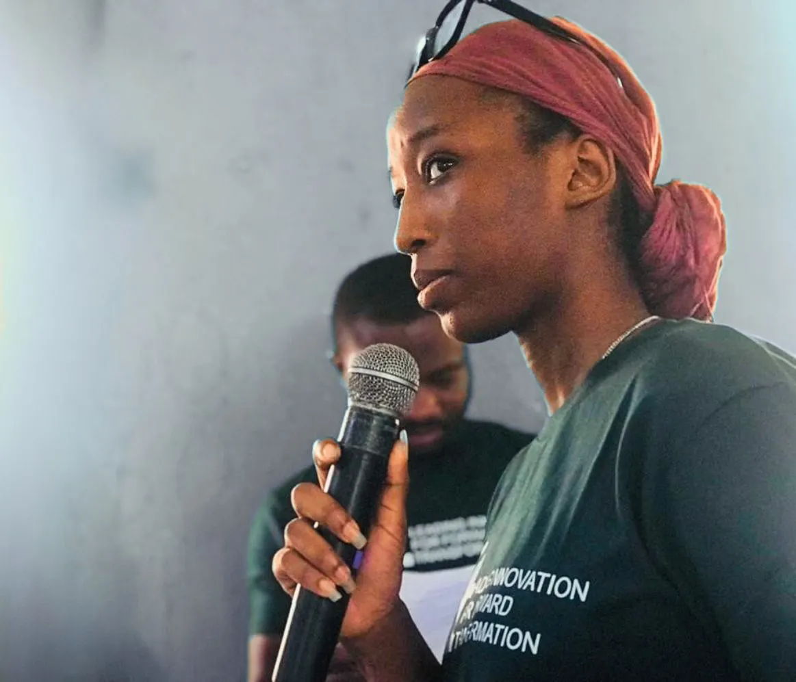
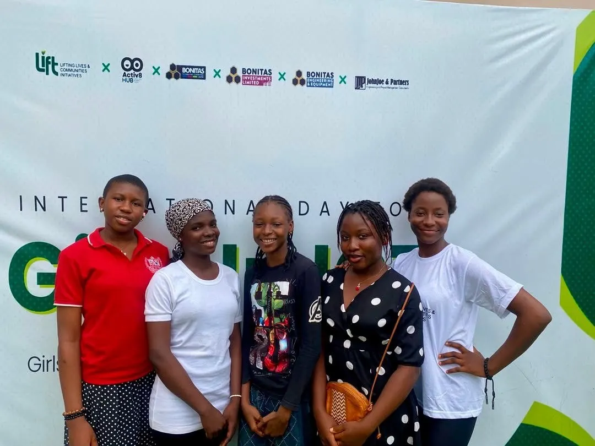
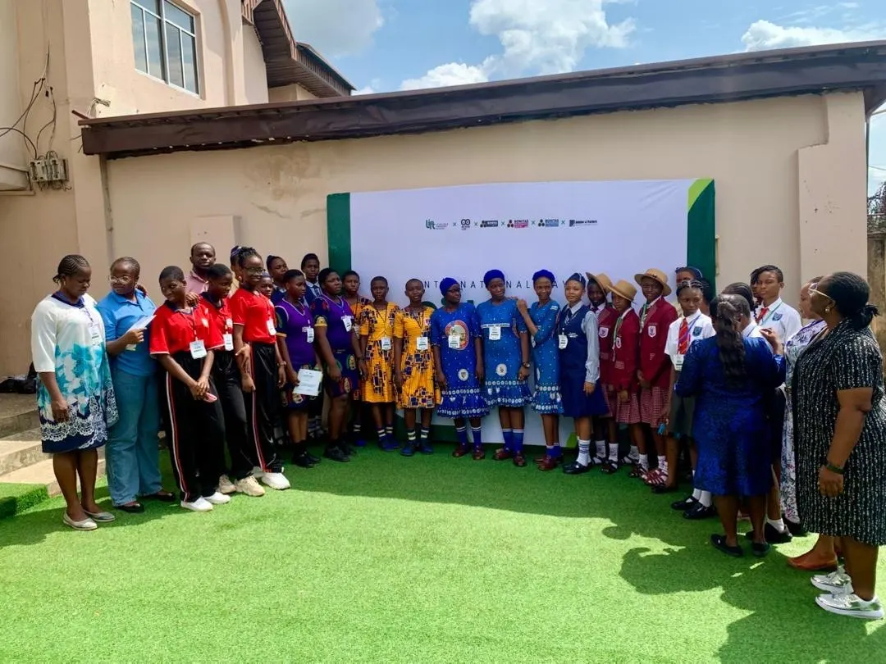
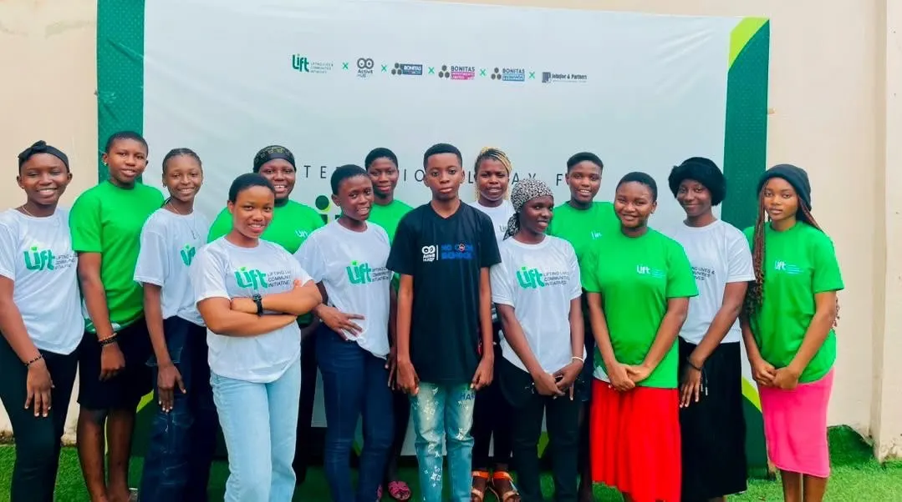
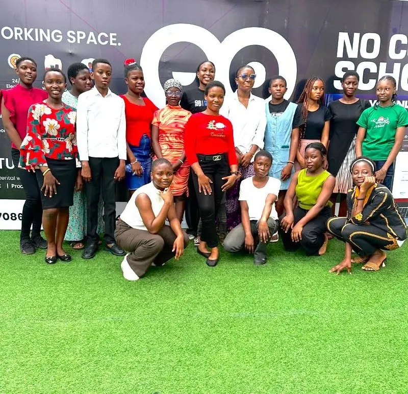
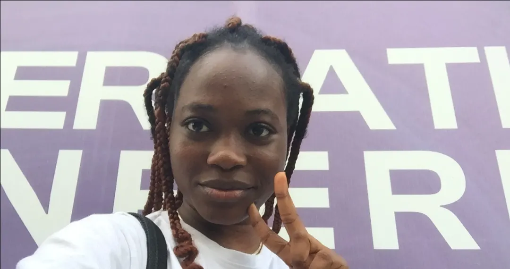

LIFT Her Skills
Helping girls and young women move from skills acquisition to real-world economic opportunities.
Learn more →Practical programmes that move girls, women and young people from potential to possibility.

Helping girls and young women move from skills acquisition to real-world economic opportunities.
Learn more →
Building digital confidence and practical technology skills for young people.
Learn more →
Creating spaces where young people can develop confidence, purpose and leadership skills.
Learn more →
A month-long bootcamp from 4 to 29 August 2026 at Activ8 Hub, Awka, gave 16 secondary school girls digital literacy, Canva design, AI for problem-solving and productivity, and an introduction to Jita Future. LIFT also ran a two-day AI Literacy Class for teachers.
Read the full storyLIFT Initiative partners with Solumkolia to provide support and community for cancer survivors as they navigate life beyond treatment.
Through this partnership, we create opportunities for survivors to access emotional support, meaningful connections, empowerment activities, and practical resources that promote healing, confidence, and renewed purpose.
Support the partnership

LIFT has given me an opportunity to transform my curiosity into a profession. Every time I sit down in front of my laptop, I think about how an opportunity can change someone's story for good. This is just the beginning.
Empowering communities, supporting economic growth and transforming lives across Nigeria.
Organisations, schools and companies can co-host programmes, sponsor bootcamps or provide equipment such as laptops for participants.
Email our team →Support our mission with generous donations to make a difference together. Contact us and we will share how to give and how your gift is used.
Ask how to give →Become a volunteer to empower others and create positive change in communities, as a mentor, trainer or event helper.
Register your interest →